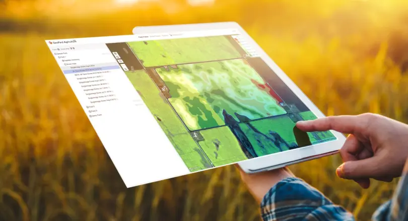
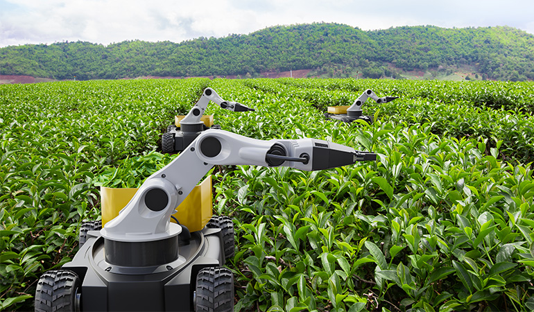

Crop Monitoring in Action



Monitor crops efficiently using AI-powered computer vision to maximize yield and reduce losses.
Learn MoreModern agriculture faces many challenges including pests, diseases, and unpredictable weather. Our project leverages computer vision to automate crop health analysis, providing timely insights to farmers for better decision making.
Identify pest infestations early through image analysis and prevent crop damage.
Recognize plant diseases using AI models trained on thousands of leaf images.
Track crop growth stages and provide recommendations for fertilization and irrigation.
Leverage cutting-edge computer vision algorithms to track crop health in real-time. Detect early signs of disease, water stress, or nutrient deficiency and improve decision-making for better yields.
Our system analyzes aerial imagery and sensor data to generate actionable insights, allowing farmers to take proactive measures in crop care and maximize productivity.